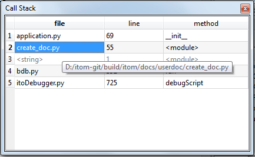

The call stack toolbox is only active and useful when debugging any python script with itom.
The usage of the call stack should be presented using one simple example. The script create_doc.py is executed in debug mode and the debugger is currently waiting in the constructor of the class Sphinx, implemented in the file application.py. When opening this file in itom, a yellow array shows the current position of the debugger in line 69 of the file application.py.
The corresponding call stack is then visible in the toolbox, like depicted below:
A call stack shows the current function stack. At first, the debug process in itom is started by calling some functions in the files bdb.py, itoDebugger.py and <script>. Afterwards the currently debugged line in the script, where the debug process is started, is listed. If this script calls another method or class in the same or a different script, an entry is added on top of the call stack. Once this method is finished, the entry is removed from the stack and the debugger continues at the position, that is currently on top of the stack.
By double-clicking on any enabled entry of the call stack, the corresponding python script is opened in itom and the position of the debugger becomes the current line. You can use the call stack in order to trace the entire call history for an improved debugging of the script(s).
Note
If you think, that the debugger shows another line in the script that does not correspond to the real executed code, you may need to reload this or further scripts. Python has an improved caching mechanism for all modules and packages that have been imported at any place of your script. Once imported, the modules and packages are translated in an intermediate file that is cached and saved in a __pycache__ folder. Further changes in any related script file are not executed if the old files are still cached. In order to force itom reloading any modules, either delete the cache folders, use the reload method from the module imp or use the dialog reloadModules from itom.
{kind=link}